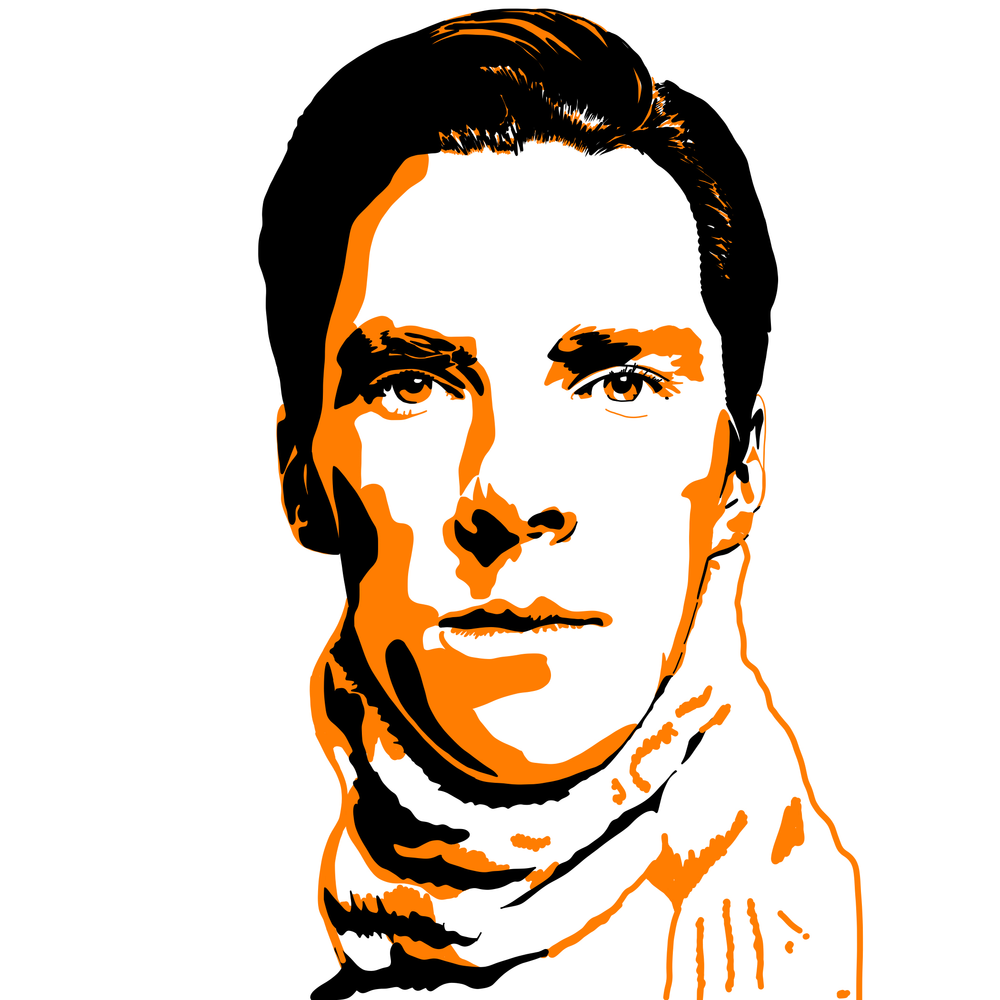
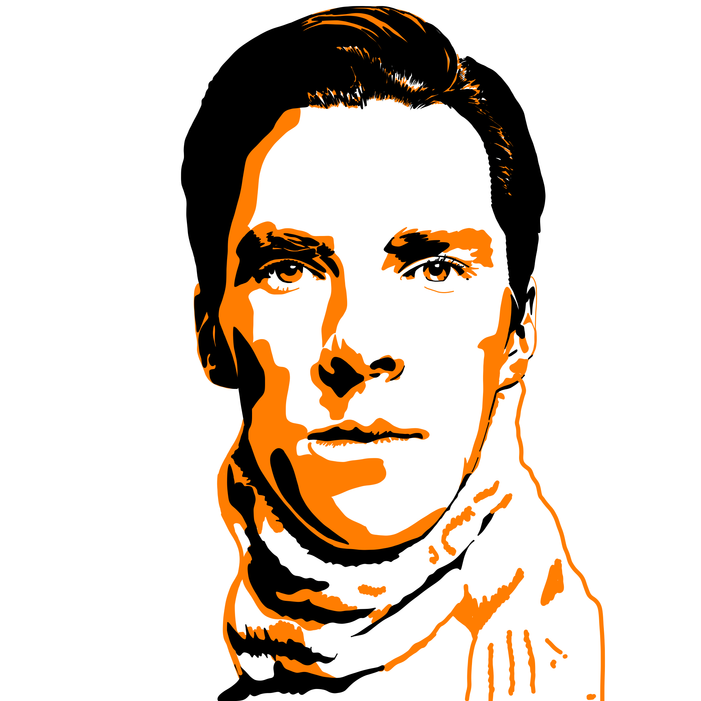

Digitaal werk
 Kopjes | Adobe Fresco
Zus | Adobe Fresco
Dochter | Adobe Fresco
Kopjes | Adobe Fresco
Zus | Adobe Fresco
Dochter | Adobe Fresco
 Portrait.jpg) Zelfportret | Adobe Fresco
Zelfportret | Adobe Fresco
 Broer | Adobe Fresco
Broer | Adobe Fresco
Stephen Fry | Adobe Fresco

Benedict Cumberbatch | Adobe Fresco
Kastje | Adobe Fresco
Vaasjes | Adobe Fresco
Broer | Adobe Fresco
Broer | Adobe Fresco
Stephen Fry | Adobe Fresco

Benedict Cumberbatch | Adobe Fresco
Kastje | Adobe Fresco
Vaasjes | Adobe Fresco
Grafische vormgeving
 Pagina Helden Magazine | InDesign
CV | Illustrator
Geometric poster | Illustrator
CD ontwerp | Photoshop
Pagina Helden Magazine | InDesign
CV | Illustrator
Geometric poster | Illustrator
CD ontwerp | Photoshop
Tekeningen en collages
Planten | kleurpotlood, marker
Planten | kleurpotlood, marker op bruin karton
 Collage
Collage
3D
kastje | verf, behangpapier
Hand | keramiek
Lamp | keramiek
 Sneeuwitje popart kruk | verfmarkers
Sneeuwitje popart kruk | verfmarkers